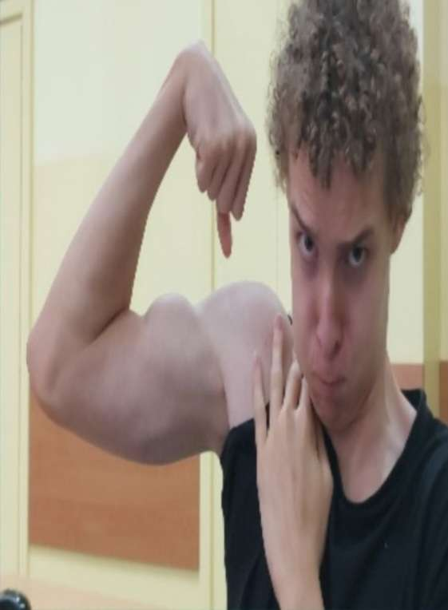
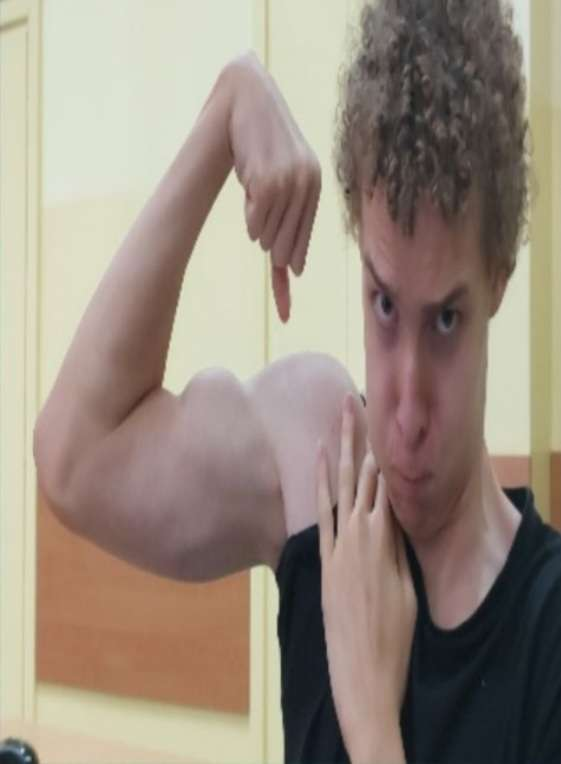

About Us
Organizacja Sunset Cinema została założona przez 3 wybitnych reżyserów filmowych - David Zyzz, Jacob Fuss oraz Cristóbal Pazdierro. Sunset Cinema Poland jest tylko jednym z kin zafundowanych przez naszą grupę, która obecna jest w branży kinowej od 10 lat. W tym momencie Sunset Cinema jest pierwszą siecią kinową na świecie, która oferuje jakość obrazu wideo w rozdzielczości 16K. Nasza orgnaizacja działa w 4 krajach - Hiszpanii, Francji, Niemczech oraz Polsce. Rocznie organizuje 14,5 miliona projekcji filmowych, które wyświetlane są ponad 300 milionom widzów.
- Obecnie Sunset Cienma posiada 4 kina rozmieszczone po całej Europie. Znajdują się one w następujących miastach:
- Warszawa, Polska
- Berlin, Niemcy
- Paryż, Francja
- Madryt, Hiszpania
Creators
David Zyzz - stosunkowo młody i nowy reżyser tej wspaniałej grupy kinowej, jednak stał się wyjątkowo popularny dzięki swojej karieże w bodybuildingu. Pochodzi on z Australi co ma wpływ na jego dziwne zachowania takie jak dymanie pająka. Jest on żonaty z 5 metrowym wężęm. Jego przeszłość jest interesująca jest on emerytowanym żołnierzem grupy uderzeniowej Australi "Pyton", do jego osiągniec należy zabicie Bin Ladena i Obamy.
Jacob Fuss - jest zarządca organizacji przez co ma niewiele czasu na inne rzeczy, pochodzi on Sudanu połódniowego co wiele wyjaśnia. Zyskał wielką popularność dzieki jego umijętnoścom. Jego historia jest naprawde interesująca jest on byłym piłkarzem reprezentacji francji w pewnym meczu dominował boisko ale niestety otrzymał czerwoną kartkę. Był to jego ostatni mecz był znany ze swojej szybkości i sile "jak u goryla".
 

Cristóbal Pazdierro - założyciel całej organizacji pochodzi on ze Stanów Zjednoczonych. Cały swój sukces zawdzięcza swoim loczkom i zniewalającej muskulaturze osiągnął bardzo wiele. Był on piratem zbadał cały ocean i znalazł 2 złote monety położył na nich fundamenty organizacji. Także był kiedyś piłkarzem lecz po ostrej krytyce trenera Szymona zrezygnował ze swojej kariery i poświecił sie podbojom mórz.